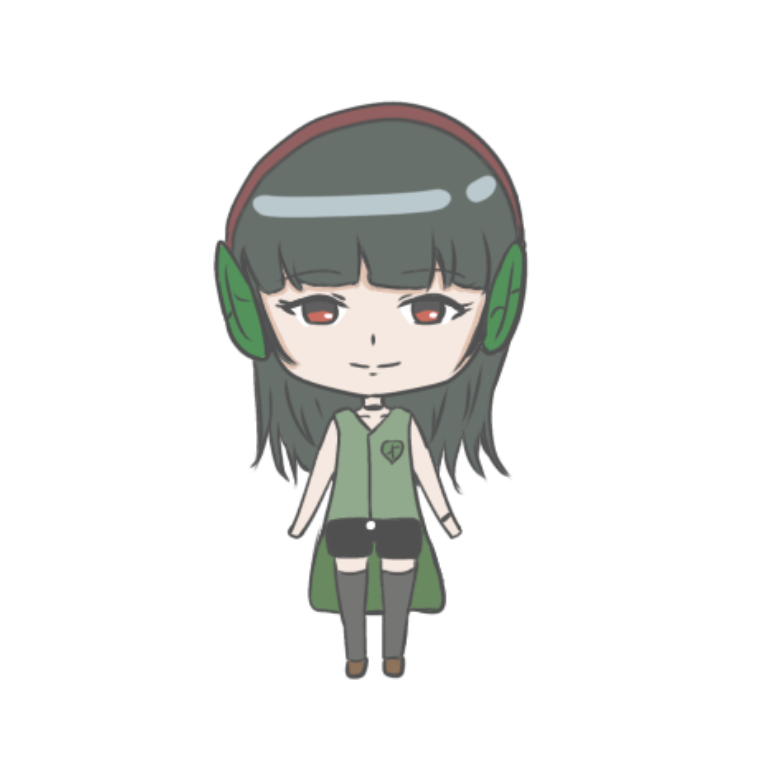
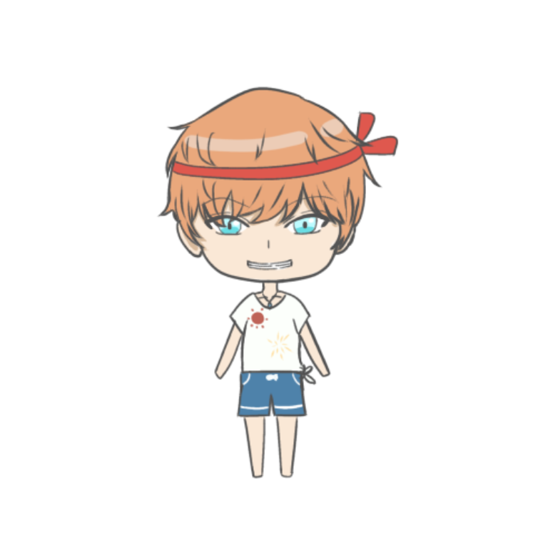
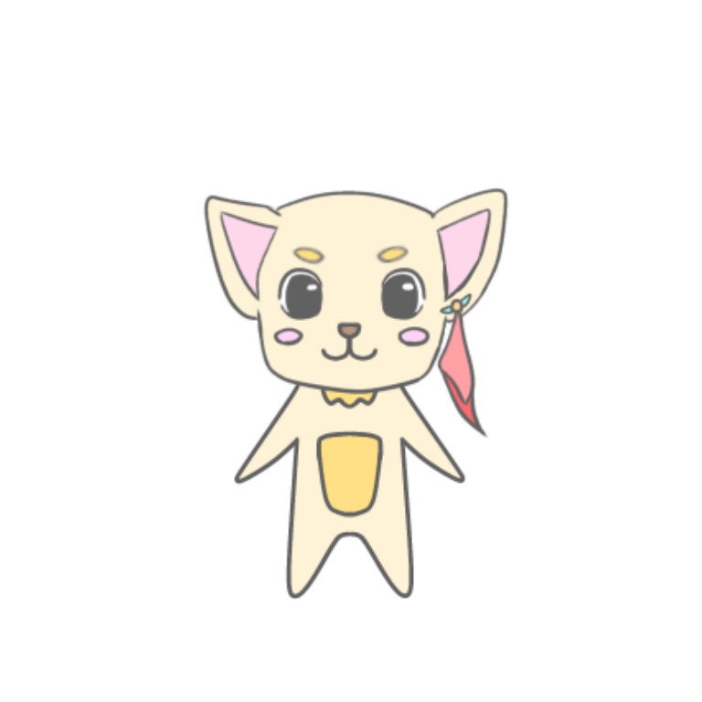

Lv.1
あと100EXP
メニュー
📖 本アプリの使い方
- 「読書開始」ボタンを押して読書タイマーをスタート
- 読み終わったら「記録する」ボタンを押す
- 読んだページ数を入力して記録
- 読書するごとにEXPが貯まり、種が成長する
- 1冊読み終えると木にフルーツが実る
🌱 成長の仕組み
- 読書するたびにEXPを獲得
- Lv.1（種）→ Lv.2〜5（芽）→ Lv.6〜（木）
- 読むたびに葉っぱが1枚増える
- 1冊を一気に読み切ると即MAXレベル（Lv.20）
- MAX Lv.は20
❓ Q&A
ホーム画面の「表示」ボタンから、読んだ本の履歴を確認できます。
ホーム画面のサポーターイラスト右下にある ✏️ ボタンから変更できます。
このデバイスのブラウザ内（localStorage）に保存されます。ブラウザのデータを削除するとリセットされます。
1冊を読み終えると「新しい種を植える」ボタンが表示されます。押すと新しい本の設定ができます。
タイトル画面の🎵ボタンからBGMのオン・オフを切り替えられます。
Reading Tree
サポーターを選んでね！
ツリーさん

リーフさん
たいよう
ぽー太新しい本を読む
ページ
目標を設定
00:00
読書中...
読書お疲れ様でした
ページ
獲得EXP: 0
新しい葉っぱが生まれました！
読書の記録
まだ記録がありません。
読了した本はまだありません。